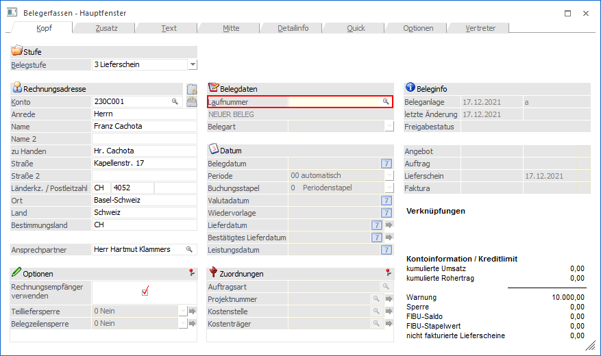
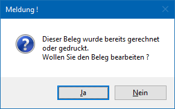
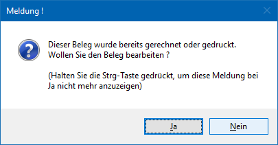
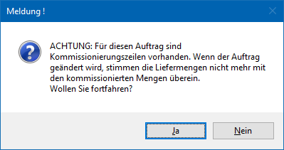
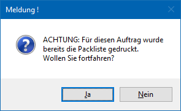
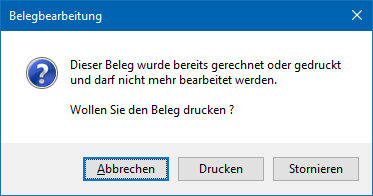
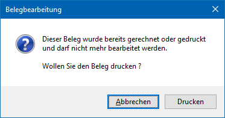

Soll ein bereits bestehender Beleg wieder aufrufen und editieren werden, dann kann im Register "Kopf" eine bereits vergebene Laufnummer eingeben bzw. über den Matchcode aufrufen werden. Sollte nur die Laufnummer, nicht aber die Kunden- bzw. Lieferantennummer bekannt sein, so kann direkt in das Feld "Laufnummer" gewechselt und dort nach dem zur Laufnummer passenden Personenkonto gesucht werden.
Hinweis
Neben dem Aufruf eines bestehenden Belegs im Programm "Belegerfassen" (über das Feld "Laufnummer") kann das Editieren auch über die Programme Belege, Belege - Matchcode und Belegmanagement gestartet werden.

Wenn ein bestehender Beleg editiert werden soll, wird je nach Art des Belegs zumindest eine der folgenden Meldung angezeigt:
ü Bereits gerechneter und / oder
gedruckter Beleg
Bei dem Aufruf eines bereits gerechneten und / oder
gedruckten Belegs wird folgende Meldung angezeigt, welche zunächst bestätigt
werden muss:

ü Bereits gerechneter und / oder
gedruckter Beleg der Belegstufe "2 - Auftrag" / "6 - L.Bestellung"
Bei dem
Aufruf eines bereits gerechneten und / oder gedruckten Belegs der Belegstufe "2
- Auftrag" / "6 - L.Bestellung" wird folgende Meldung angezeigt, welche zunächst
bestätigt werden muss:

ü Bereits gerechneter und / oder
gedruckter Beleg der Belegstufe "2 - Auftrag" mit Kommissionierungszeilen
Bei
dem Aufruf eines bereits gerechneten und / oder gedruckten Auftrags erscheint
folgende Meldung, wenn bereits Kommissionierungszeilen für den Beleg vorhanden
sind:

ü Bereits gerechneter und / oder
gedruckter Beleg der Belegstufe "2 - Auftrag" mit gedruckter Packliste
Bei
dem Aufruf eines bereits gerechneten und / oder gedruckten Auftrags erscheint
folgende Meldung, wenn bereits die Packliste im Originaldruck gedruckt
wurde:

ü Bereits verbuchter
Beleg
Handelt es sich einen Beleg welcher bereits erledigt wurde (d.h. in
eine Folgestufe gewandelt) oder um eine in der WinLine FIBU bereits verbuchte
Faktura, so ist ein Editieren nicht möglich! Hierauf wird durch die folgende
Meldung hingewiesen:

ü Bereits erledigter
Beleg
Handelt es sich einen Beleg welcher bereits erledigt wurde (d.h. in
eine Folgestufe gewandelt), so ist ein Editieren nicht möglich! Hierauf wird
durch die folgende Meldung hingewiesen:
